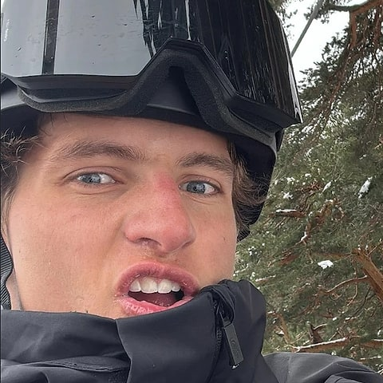
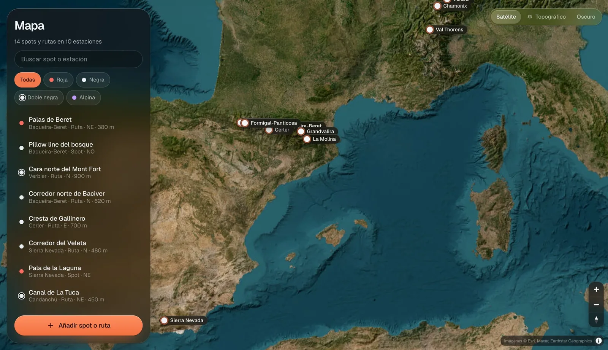
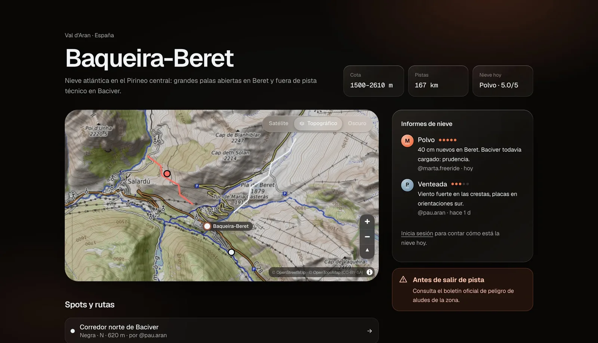
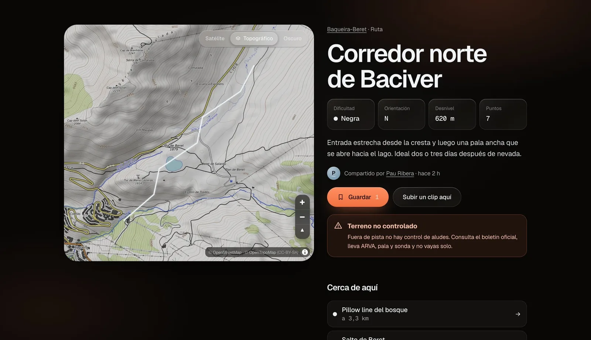
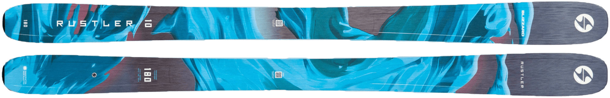
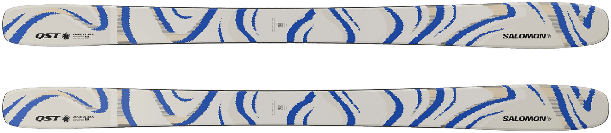
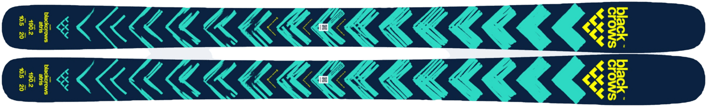

TRAZA
Spots, rutas fuera de pista y clips de cada estación, compartidos por la comunidad.
En directo desde la comunidad
Clips, fotos, rutas e informes de nieve de quien ha esquiado hoy.

Hemos construido un salto en Beret para que lo use todo el que quiera.
Spots y rutas fuera de pista de cada estación, con dificultad, orientación y desnivel.

Informes de quien ha esquiado esta mañana, junto al boletín oficial de aludes.

Cada spot con su traza sobre el terreno, sus clips y los spots cercanos.

175 cm · 72 kg · Avanzado · Freeride
Elige tu esquí · con IA
La IA cruza tu físico, tu nivel y tu estilo con lo que puntúan los esquiadores como tú.



Estaciones
Spots · Rutas · Clips · Nieve · Esquís — Temporada 26 / 27